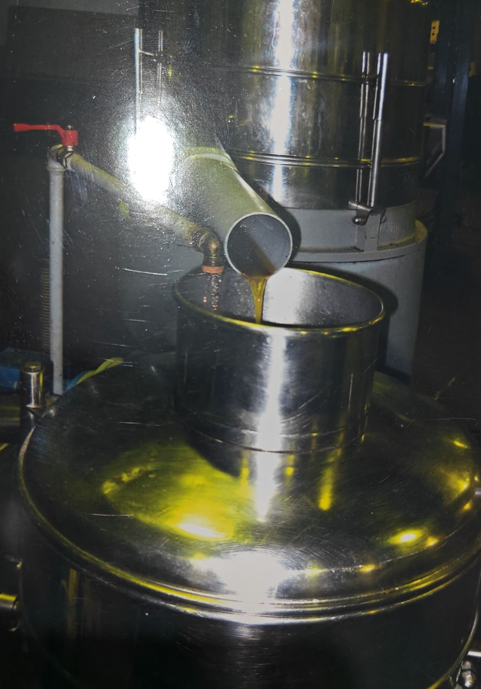

In Malesina since 1963
Three generations of the Markopoulos family and one olive mill among the olive groves of Lokrida, in central Greece.
Malesina is a town surrounded by olive groves, vineyards and fields, a few kilometres from the sea of the Euboean Gulf. Here, in 1963, our grandfather planted the family’s first trees and set up the mill.
The work has passed from one generation to the next ever since. Today the third generation of the family runs the mill, with a modern stainless-steel line and with everything we learned working alongside those before us.
What hasn’t changed
The equipment has been renewed, quality rules have become stricter and harvesting has changed. Our job is still the same: to receive each grower’s olives, mill them carefully and give back their own oil.

From the family archive
Photos from the mill’s earlier years. If you recognise someone, we would love to hear from you.



The season is on. Book your milling slot with one call.